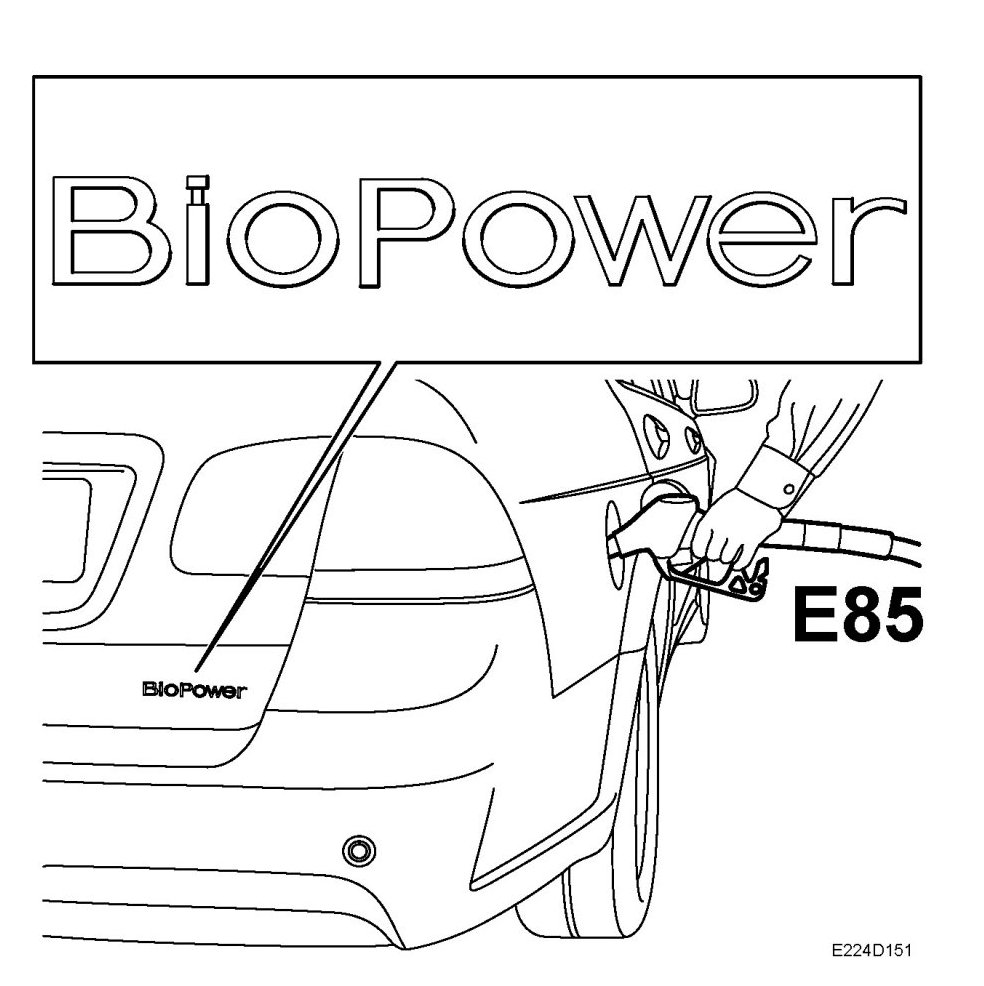

Brief Description, Biopower
Brief Description, BioPower
Introduction

Saab 9-3 BioPower is available in the B207E (1.8t) engine variant and can be specified with manual or automatic transmission.
Fuel used can be E85, pure petrol or any mixture of the two. The engine management system adapts to the ethanol content of the fuel. Engine output and torque increase during operation on E85. With lower ethanol content the output and torque are lower.
Fuel consumption is higher during operation on E85 than during operation on pure petrol, the difference varies depending on driving style. The difference is greater during cold starting and during the warm-up phase, in particular when driving with light loading. The difference in consumption decreases with high engine load.
A number of changes of engine components, amongst other things, are made to adapt the engines to operate on fuel with a high ethanol content. The engine management system is the same as on the petrol variants, Trionic T8. However, a number of new functions have been added to the software.
Apart from the environmental benefits of using fuel with a high ethanol content, the high torque in Saab BioPower engines facilitates environmentally friendlier driving. Using the engine's high torque at low engine speeds instead of needing to rev the engine harder is favorable for fuel consumption and accordingly emissions.